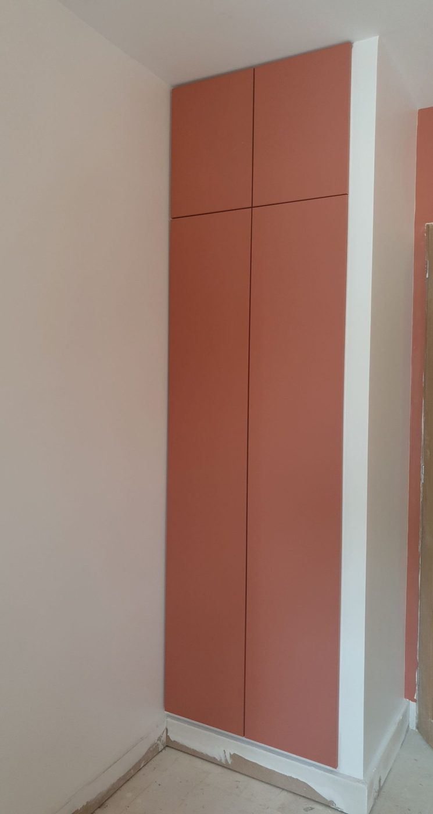

Prestations / Peintures décoratives
Peintures décoratives
Béton ciré, chaux, stuc et patines. Des finitions qui se jugent à la main autant qu'à l'œil.

Ce que nous réalisons
Matières et finitions
Les finitions que nous appliquons
- Béton ciré sur murs, sols, plans de travail et salles de bain, avec système d'étanchéité en zone humide.
- Enduit à la chaux et badigeon, pour les intérieurs anciens où une peinture plastique étouffe le mur.
- Stuc et tadelakt, finition serrée et brillante.
- Patines et effets de matière sur meubles, boiseries et murs d'accent.
- Teintes sur mesure, mise au ton d'après un échantillon ou un tissu.
Ces finitions se réalisent en plusieurs passes, avec des temps de séchage incompressibles. Comptez trois à cinq jours pour une pièce, contre un à deux en peinture classique.
Avant de choisir
Échantillon et support
Toujours un échantillon avant le chantier
Une matière ne se choisit pas sur un nuancier. Le béton ciré change de ton en séchant, la chaux réagit à la lumière de la pièce, une patine dépend du geste. Nous réalisons systématiquement un échantillon sur place, sur le mur concerné, avant de lancer le chantier.
Le support conditionne le reste. Un béton ciré demande un fond parfaitement plan et stable, ce qui implique souvent un ragréage ou un enduit de dressage préalable. Sur une cloison qui bouge, la microfissure est certaine.
En salle de bain et en crédence de cuisine, le béton ciré est protégé par un vernis polyuréthane bicomposant. Sans cette protection, il tache dès la première tomate.
Prix indicatifs
Fourchettes 2026, préparation incluse
Combien ça coûte
| Prestation | Prix HT |
|---|---|
| Béton ciré mural, préparation et protection incluses | 90 à 160 €/m² |
| Béton ciré au sol ou plan de travail | 120 à 200 €/m² |
| Enduit à la chaux ou badigeon | 70 à 120 €/m² |
| Stuc ou tadelakt, finition serrée | 110 à 190 €/m² |
| Patine sur boiserie ou meuble | sur devis |
| Échantillon sur site avant chantier | offert avec devis signé |
Ces prix incluent la préparation du support et la protection finale. Un dressage lourd du mur se chiffre à part.
Prix indicatifs, hors fourniture lorsque précisé. TVA à 10 % pour les logements achevés depuis plus de deux ans. Chaque chantier fait l'objet d'un devis détaillé après visite technique gratuite.
Questions fréquentes
4 réponses
Questions fréquentes
Le béton ciré est-il adapté à une salle de bain ?
Oui, avec un système d'étanchéité sous la matière et un vernis polyuréthane par-dessus. Sans ces deux étapes, non.
Combien de temps avant de pouvoir utiliser la pièce ?
Sept jours pour une utilisation normale, vingt-huit jours pour la polymérisation complète d'un vernis polyuréthane. Nous le planifions avec vous.
Peut-on l'appliquer sur du carrelage existant ?
Sur un carrelage mural bien collé et dégraissé, oui, avec un primaire d'accrochage. Sur un sol, cela dépend de l'état des joints.
Comment l'entretenir ?
Savon neutre, jamais de produit acide ni d'éponge abrasive. Une nouvelle couche de cire ou de protection tous les deux à trois ans en zone très sollicitée.
Voir aussi : peinture intérieure · papier peint · façades
Passer à l'action
Réponse sous 24 h
Parlons de votre projet
Visite technique gratuite, devis détaillé sous 48 heures, dans l'est parisien et à Paris.